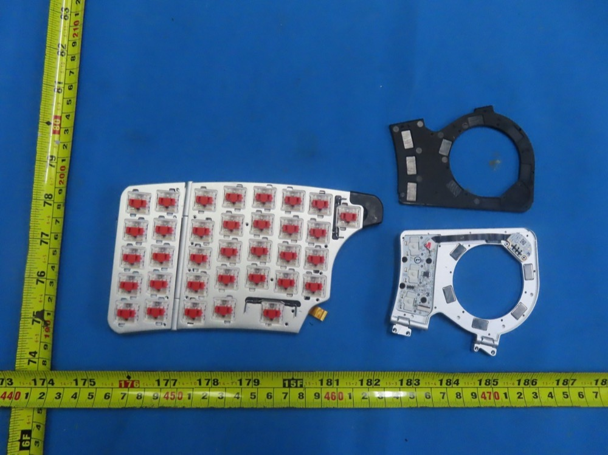
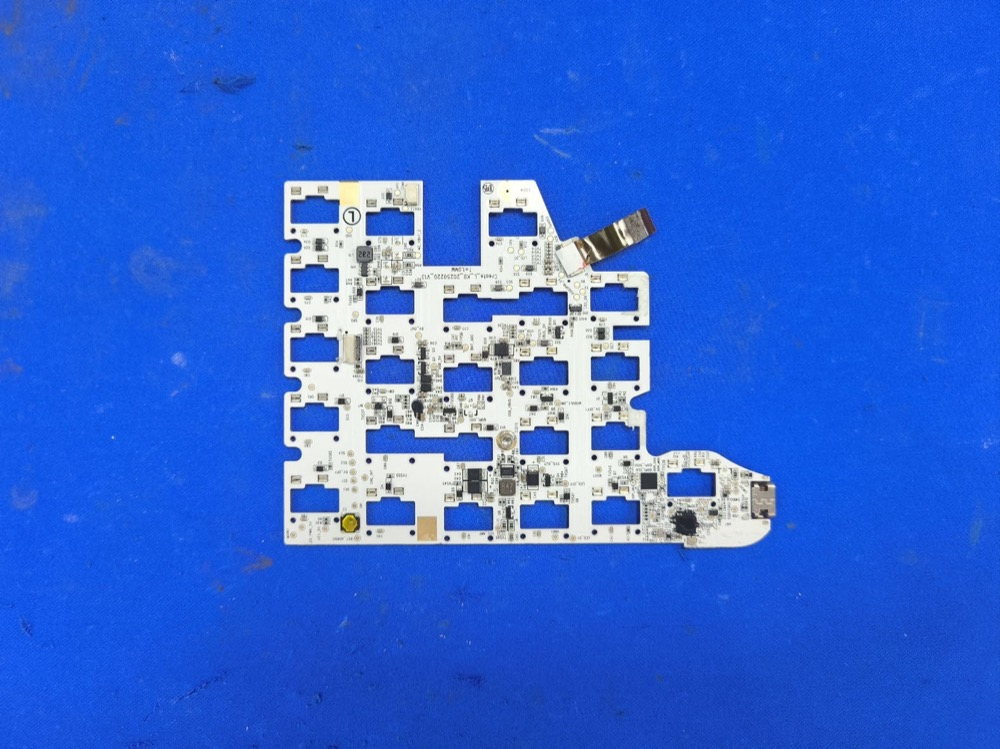
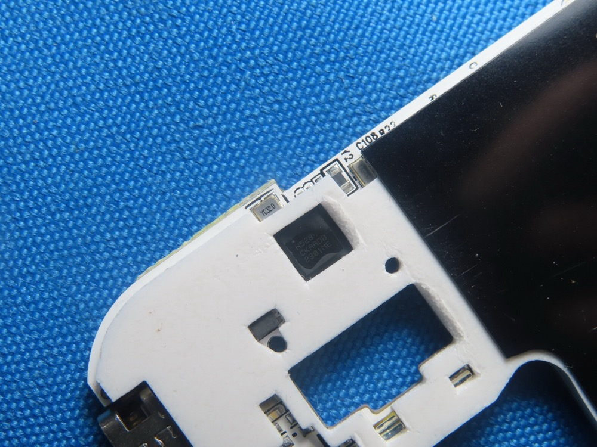
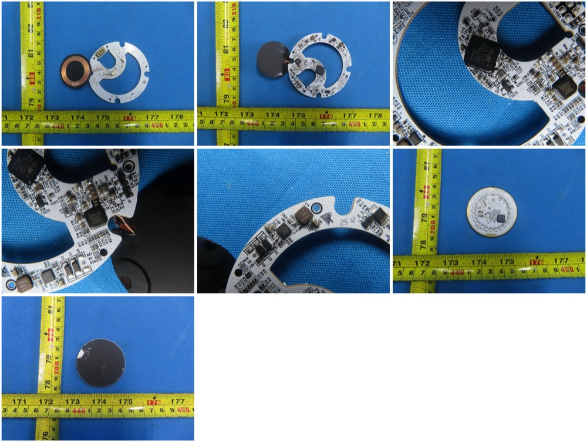
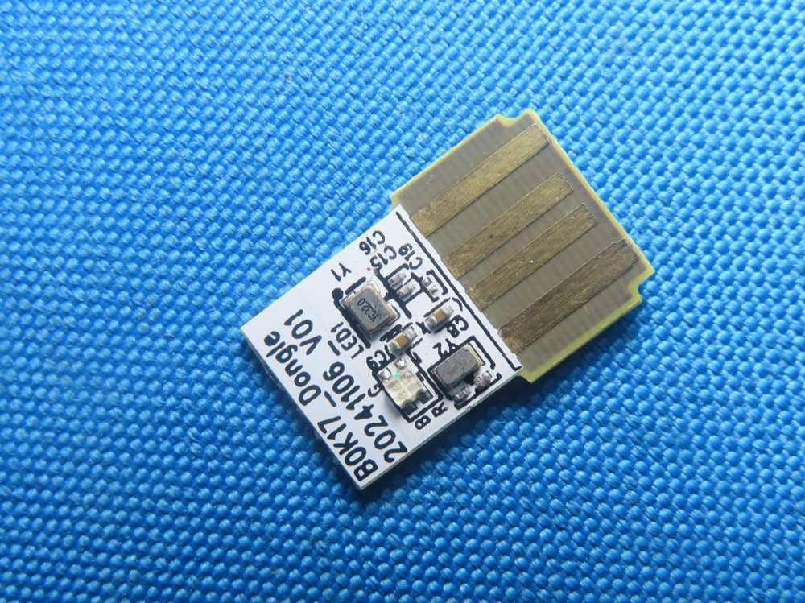
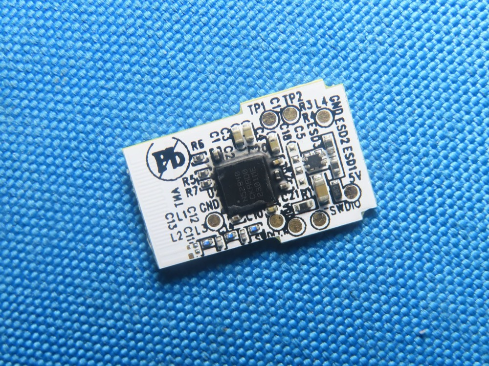

Hardware deep dive¶
Consolidated from FCC filings (grantee 2BQ4V: 0825CRL left,
0825CRR right, 0825DG dongle), USB/BLE probing, and the NayaCore
binary. Product family: halves NAYA-800-1, dongle NAYA-100-1.
FCC filings (official source)¶
- Official: FCC OET Equipment Authorization search
(fcc.gov/oet/ea/fccid) —
search Grantee Code
2BQ4V. All PDFs below (test reports, internal/external photos, label, manuals, antenna specs, RF exposure) live there as exhibits. - Mirror index (convenience, same exhibits): 0825CRL · 0825CRR · 0825DG.
- Grant facts: issued 2025-08-29, test firm BTL Inc (Dongguan), conducted output ~0.007 W (2.4 GHz DTS, Part 15C). Schematics, block diagram and operational description are long-term confidential (metadata only) — hence no public schematics.
- All photos on this page are FCC exhibits (internal/external photos), vendored here at reduced size; full-resolution originals are in the filings above.
Halves¶
| Item | Value |
|---|---|
| BLE SoC | Nordic nRF52811 (functional evidence: FCC 125 kbps S=8 coded-PHY tests pass; the nRF52810 lacks it. Marking reads N5281?/CKAAD0/2301ME) |
| USB MCU | Unknown 2nd chip — the nRF has no USB; halves expose CDC+HID; FW images are 226–360 KB ≫ 192 KB nRF flash |
| Boards | Create_L_KB_20250220_V13 / Create_R_KB_20250221_V13 (filing exhibit shows V11 20250220; live unit rev may differ) |
| Switches | Kailh CPG-1232 low-profile |
| Base cells | FH301217 3.7 V 50 mAh — hot-swap buffers, not the runtime source |
| Antenna | Dongguan Boen RF0400A PCB, 0.8 dBi |
| Radio | Bluetooth 5.4, 1M/2M/125k coded, up to +9 dBm. No proprietary radio (the SRD report is a 2nd BLE grant) |
| Debug | SWDIO/SWDCLK test points at the USB-C corner |
| USB | VID 0x37D1, PID 100 (left) / 200 (right); CDC-Control + CDC-Data + HID |
| Toolchain | nRF Connect SDK 5.1.0 (Naya_Temp_Flash_Pair.exe in test reports) |
Each half is an independent BLE peripheral (HID over GATT + custom
0x1234 service); the host (NayaCore) merges them. No radio link
between halves.

Switch plate: red Kailh low-profile switches, circular module-bay frames with dock magnets (FCC internal photos).

Full mainboard (Create_L_KB_…_V13 silkscreen) — switch cutouts,
USB-C tail at right, central MCU zone (FCC internal photos).

SoC die marking confirms nRF52811 (date code 2301 = Jan 2023); 32 MHz crystal alongside (FCC internal photos).
Biggest open hardware question¶
Identity + pinout of the USB MCU in the halves (the component side of the V13 mainboard appears in no filing). Everything else needed for a ZMK port is known — and Zephyr 3.7 in the bootloader confirms a ZMK port is architecturally a board-def + driver exercise on the same nRF Connect SDK generation.
Modules (Track / Touch / Tune — plus two unreleased)¶
NayaCore references five *_UserApp.sfb images (+HASH each):
Track, Tune, Touch, Float, Query. Only the first three shipped.
.sfb files are NOT in the app bundle — they live in the base's
external SPI flash (LittleFS) and are flashed into modules via
MCUBoot through the base (MCUBootWorker_CreateLeft_PortOne/Two_Module).
| Item | Value |
|---|---|
| MCU | STM32F411CEU6 (Cortex-M4F, 512 KB, USB OTG FS) on Touch_MB 20250227 V10 |
| Touch frontend | SGMicro 4T523DF |
| Charging | Qi receiver Maxic MT5705 (charging only — no data) |
| Link to base | Wired pogo pins (VBUS/USB on test pads) — no radio in modules |
| Power | Bidirectional (see power); packs ~600–1000 mAh (Track QS801630 1S2P 600 mAh, Touch FH202030 1000 mAh class) |
| Module FW | 0.2.3.3 (read live via de/1008) |
| Extras | Coin vibration motor (haptics), halo LED rings, dock magnets |
| Test pads | SWCLK / BOOT0 / BOOT1 broken out |
Gesture vocabulary per module (from NayaCore strings):
- Track — trackball (
track_up/down/left/right,horizontal/vertical,rotate,clockwise/counter_clockwise_rotate) + 4 buttons (tap/double_tap/hold/press/tap_holdonbutton_1..4). - Tune — dial (
rotate,clockwise/counter_clockwise_rotate) + touch surface, 1–4 fingers (tap/double_tap/swipe_*/horizontal/vertical/pinch/spread). - Touch — touchpad, 1–4 finger gestures (
tap/double_tap/swipe_*/…,pinch/spread/pinch&spreadfor 2 fingers). - Float (UNRELEASED) — dial (
clockwise/anti_clockwise/rotation) + 3D nav (rotation_x/y/z,translation_x/y/z) — a spatial/3D-mouse module. - Query (UNRELEASED) — no input gestures at all → almost certainly output-only (display?).

Module ring PCB: Qi receiver coil, charge/control electronics and close-ups of the module-side components (FCC internal photos).
Dongle (NAYA-100-1, “Speedlink”)¶
nRF52840 (CKAAD0 2301ME), board BOK17_Dongle 20241106 V01, USB-A,
Boen RF0401A antenna, SWDIO/TP1/TP2 broken out. Plain Bluetooth 5.4,
not proprietary 2.4 GHz.

Dongle front — bare-board USB-A plug, status LED and crystal (FCC internal photos).

Dongle back — nRF52840 (CKAAD0 2301ME) with labeled SWDIO and
TP1/TP2 test points: the custom-firmware entry in hardware
(FCC internal photos).
Supply chain¶
ODM: Dongguan Boen Intelligent Technology. Label: 5 V ⎓ 1.5 A, Naya B.V. Wasaweg 3, Groningen. Certs: FCC 2BQ4V, IC 34320, Japan 219-257016, Korea R-R-NBv-0825CRR.